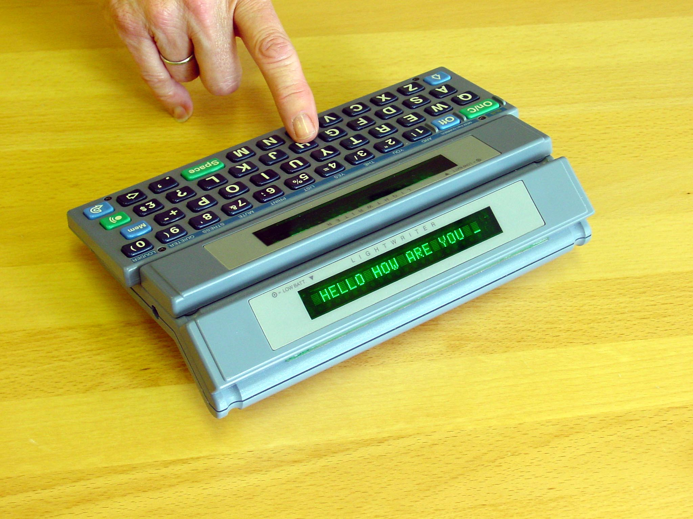

The Machine Built for a Conversation
In 1968, a 21-year-old engineer lost his speech to encephalitis. A French president's mistaken assumption flew him home, and the device he built changed how we think about face-to-face communication.
In 1968, a 21-year-old British engineering student named Toby Churchill went swimming in a polluted river during a work placement in France. Twenty-four hours later, he was locked in — unable to speak, unable to move, unable to do anything but keep his own mind alive inside a body that had suddenly stopped obeying.
A quirk of history intervened. President de Gaulle, seeing the surname "Churchill," assumed kinship with Winston and arranged a private jet to fly him back to Addenbrooke's Hospital in Cambridge. The assumption was wrong. The jet was real. Toby Churchill had no relation to the prime minister. But he did, as it turned out, have something else: an engineering training that would not let him accept the tools he was given.
Months of rehabilitation at Stoke Mandeville Hospital left him with limited movement in his left arm and hand, and no speech at all. The augmentative communication device the hospital offered was the POSSUM — a row-and-column scanner that required the user to wait while a cursor cycled through options, then activate a switch at the right moment. It was slow, sequential, and one-sided. It was designed for a person who needed to output words, not for a person who needed to have a conversation.
Churchill, who had studied engineering at the University of Bath, did what any engineer would do: he designed his own.

The insight: two faces, one conversation
The first Toby Churchill Ltd device shipped in 1973. But the form that made the Lightwriter a paradigm — the SL1, around 1985 — had a feature no other AAC device offered.
It had two displays.
One faced the user, showing the message being composed on a compact QWERTY keyboard, complete with cursor and editing. The other faced outward — mounted on the back of the case so the person sitting across the table could read the text appearing character-by-character as it was typed. A speech synthesizer also spoke the finished message aloud, but the real innovation was the second display. It meant the listener did not have to wait. They could start reading before the sentence was complete. They could nod, react, respond in conversational time.
This is the difference between a voice prosthesis and a conversation tool. A device that only speaks treats communication as broadcast: I type, the machine says it, you hear it. A device that lets you read along treats communication as a shared workspace — a space where both people are active participants, where the rhythm of turn-taking is preserved. The Lightwriter's two displays are a physical acknowledgment that conversation is a two-body problem.
The machine that kept going
Toby Churchill Ltd never became a household name like Kurzweil or Dragon Systems. But it won a British Design Award, the Queen's Award for Export twice (1995 and 1996), and appeared on BBC's Tomorrow's World four times in the 1970s. The Lightwriter line continued through the SL35 (1994, with DECtalk-class speech synthesis — the same family as Stephen Hawking's voice), the SL40 (2008 with modern connectivity), and remains in production today as the SL50 under the Swedish company Abilia.
Notable users include Diane Pretty, who used a Lightwriter to argue her right-to-die case before the House of Lords and the European Court of Human Rights; comedian Lee Ridley, better known as Lost Voice Guy, who won Britain's Got Talent in 2018; and Toby Churchill himself, who used his own device for decades until his death in 2022.
Why this belongs here
The museum's collection already includes several ways of communicating when speech is not available: the VersaBraille tactile display for reading electronic text, the Tongue Touch Keypad for alternative input, and the Electroglottograph that measures vocal fold movement through the neck. But the Lightwriter fills a gap none of those touch: the social interface. It is a device designed not just to output words, but to let two people look at the same words at the same time, in the same room, in real time.
That act of shared attention — two sets of eyes on the same message, reading together — is a genuine HCI design insight, as elegant and specific as the LEAP keys on the Canon Cat or the pressure-sensitive pads on the Stompin' grid. It just happens to be an insight about something we rarely think to design for: the simple human act of facing someone and being understood.
The Lightwriter lives in the museum now. Come read along.
— Beepy